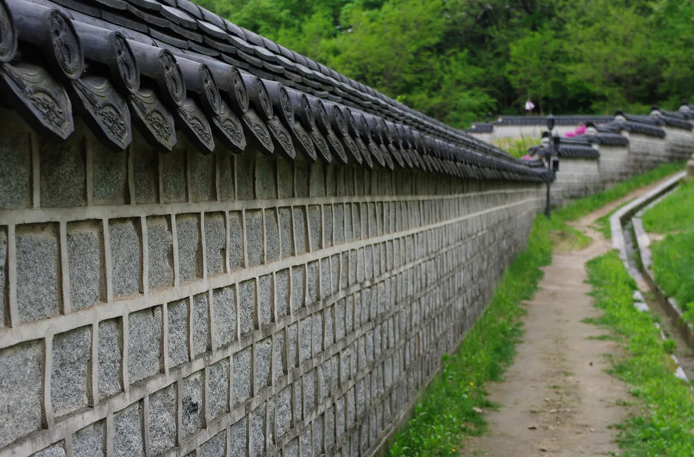

이재명 대통령 지지율 43.3%로 4주 연속 하락…취임 후 최저치
이재명 대통령의 국정수행 지지율이 4주 연속 하락하며 취임 이후 가장 낮은 수치를 기록했다. 여론조사 전문기관 리얼미터가 에너지경제신문 의뢰로 지난 3일부터 7일까지 전국 18세 이상 유권자 2514명을 대상으로 실시한 조사에서, 이 대통령의 국정수행에 대한 긍정 평가는 전주보다 2.6%포인트 낮아진 43.3%로 집계됐다. 표본오차는 95% 신뢰수준에서 ±2.0%포인트이며, 이번 조사는 유선전화와 무선전화 자동응답 방식을 병행해 진행됐다.
반면 부정 평가는 전주 대비 2.5%포인트 오른 53.0%를 기록해 두 주 연속으로 오차범위를 벗어나 긍정 평가를 앞섰다. '잘 모름' 또는 무응답은 3.6%였다. 이 대통령의 지지율은 7월 셋째 주 48.4%를 기록한 이후 넷째 주 46.3%, 다섯째 주 45.9%에 이어 8월 첫째 주 43.3%까지 4주 연속 내림세를 보이고 있으며, 이는 취임 이후 최저치에 해당한다.

리얼미터는 이번 하락의 배경으로 부동산 세제 개편과 형사소송법 개정 논란, 육군사관학교 관련 발언 후폭풍이 겹친 점을 꼽았다. 여기에 폭염과 경제 불안 요인까지 더해지면서 서울과 보수층, 고령층을 중심으로 지지층 이탈이 확대됐다는 분석이다. 특히 부동산 관련 정책은 실거주자와 다주택자 모두에게 영향을 미치는 만큼 여론에 미치는 파급력이 크다는 평가가 나온다.
형사소송법 개정 논란도 지지율 하락에 영향을 미친 요인으로 지목된다. 검찰과 경찰의 수사권 조정을 둘러싼 논의가 이어지는 가운데, 관련 법안 처리 방향을 둘러싼 여야 대립과 여론의 반응이 갈리면서 정부 정책 전반에 대한 신뢰도에도 영향을 미친 것으로 풀이된다. 육사 관련 발언을 둘러싼 논란 역시 보수층 이반을 부추긴 요인 중 하나로 거론되며, 여권 내부에서도 이에 대한 우려의 목소리가 나오고 있다.

정당 지지도 조사에서는 지난 6일부터 7일까지 전국 18세 이상 1007명을 대상으로 진행한 조사에서 더불어민주당이 44.6%, 국민의힘이 37.6%를 각각 기록했다. 두 정당 간 지지율 격차는 여전히 존재하지만, 여당의 지지율 역시 대통령 지지율 하락과 맞물려 다소 위축된 모습을 보이고 있다는 평가가 나온다. 정치권에서는 여당이 대통령 국정 운영 지지율과 함께 동반 하락세를 보이는 점을 우려스럽게 보고 있다.
정치권에서는 이 대통령의 지지율이 4주 연속 하락세를 이어가고 있다는 점에 주목하고 있다. 취임 초 고공행진을 이어가던 지지율이 최근 들어 뚜렷한 하락 곡선을 그리고 있는 만큼, 정부로서는 하락세를 멈추기 위한 국정 운영 기조 조정이 필요하다는 목소리도 나온다. 특히 서울 지역과 고령층에서의 이탈이 두드러진 만큼, 해당 계층을 겨냥한 정책적 대응이 이뤄질지 주목된다.
향후 지지율 추이는 부동산 정책의 시장 반응과 형사소송법 개정안의 국회 처리 과정, 그리고 폭염 이후 경제 지표 회복 여부에 따라 달라질 것으로 보인다. 정치권 안팎에서는 다음 조사에서 하락세가 이어질지, 아니면 반등 국면으로 전환될지가 향후 정국의 중요한 변수가 될 것으로 내다보고 있으며, 여권 역시 남은 하반기 국정 운영 방향을 재점검할 필요가 있다는 지적이 나온다.